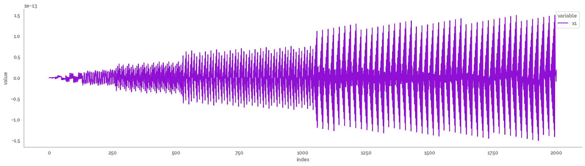
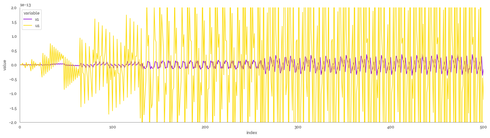

first order and second order ordinary differential equations (ODE)s¶
[14]:
import numpy as np
import pandas as pd
import matplotlib.pyplot as plt
import seaborn as sns
import session_info
from jmspack.utils import JmsColors
[2]:
from skmid.models import generate_model_attributes, DynamicModel
from skmid.integrator import RungeKutta4
[3]:
if "jms_style_sheet" in plt.style.available:
plt.style.use("jms_style_sheet")
[4]:
session_info.show()
[4]:
Click to view session information
----- matplotlib 3.5.1 numpy 1.20.3 pandas 1.4.2 seaborn 0.11.0 session_info 1.0.0 skmid 0.0.0 -----
Click to view modules imported as dependencies
PIL 8.0.0 appnope 0.1.0 backcall 0.2.0 beta_ufunc NA binom_ufunc NA bottleneck 1.3.2 casadi 3.5.5 cffi 1.14.3 colorama 0.4.4 cycler 0.10.0 cython_runtime NA dateutil 2.8.1 decorator 4.4.2 ipykernel 5.3.4 ipython_genutils 0.2.0 jedi 0.18.1 kiwisolver 1.2.0 mpl_toolkits NA nbinom_ufunc NA numexpr 2.7.1 packaging 20.4 parso 0.8.0 pexpect 4.8.0 pickleshare 0.7.5 prompt_toolkit 3.0.8 ptyprocess 0.6.0 pygments 2.7.1 pyparsing 2.4.7 pytz 2020.1 scipy 1.7.1 six 1.15.0 statsmodels 0.12.0 storemagic NA swig_runtime_data4 NA tornado 6.0.4 traitlets 5.0.5 wcwidth 0.2.5 zmq 19.0.2
----- IPython 7.18.1 jupyter_client 6.1.7 jupyter_core 4.6.3 jupyterlab 2.2.6 notebook 6.1.4 ----- Python 3.8.5 (default, Sep 4 2020, 02:22:02) [Clang 10.0.0 ] macOS-10.16-x86_64-i386-64bit ----- Session information updated at 2022-04-20 12:31
Initial Parameters¶
[6]:
# Choose an excitation signal
np.random.seed(42)
N = 2000 # Number of samples
fs = 1 # Sampling frequency [hz]
t = np.linspace(0, (N - 1) * (1 / fs), N)
m=-0.0001
c=1
x=np.arange(N)
f=5
df_input = pd.DataFrame(
data={
# "u1": m*x + c,
# "u1": 2 * np.random.random(N),
# "u2": 2 * np.random.random(N),
"u1": np.sin(np.pi * f * x / fs),
# "u4": 2 * np.random.random(N),
},
index=t,
)
x0 = [1, -1] # Initial Condition x0 = [0;0]; [nx = 2]
parameter_dict={"N": N,
"fs": fs,
"t": t,
"x0": x0}
print("Initial Parameters")
print(parameter_dict)
display(df_input.head())
print(df_input.shape)
Initial Parameters
{'N': 2000, 'fs': 1, 't': array([0.000e+00, 1.000e+00, 2.000e+00, ..., 1.997e+03, 1.998e+03,
1.999e+03]), 'x0': [1, -1]}
| u1 | |
|---|---|
| 0.0 | 0.000000e+00 |
| 1.0 | 6.123234e-16 |
| 2.0 | -1.224647e-15 |
| 3.0 | 5.389684e-15 |
| 4.0 | -2.449294e-15 |
(2000, 1)
[7]:
_ = plt.figure(figsize=(20, 5))
_ = sns.lineplot(data=df_input
.reset_index()
.melt(id_vars="index"),
x="index",
y="value",
hue="variable"
)
_ = sns.despine()
1st order ODE¶
Symbolics¶
[8]:
(x, u, param) = generate_model_attributes(state_size=1, input_size=1, parameter_size=2)
# assign specific name
x0 = [0] # initial input value
kp, tp = param[0], param[1]
param_truth = [0.1, 0.5] # ca.DM([0.1, 0.5])
rhs = [((-1/ tp)*x) + ((kp / tp)*u)] #1st order ODE
rhs
[8]:
[MX(@1=p[1], (((p[0]/@1)*u)-(x/@1)))]
Define the Dynamic Model¶
[9]:
sys = DynamicModel(state=x, input=u, parameter=param, model_dynamics=rhs)
sys.print_summary()
Input Summary
-----------------
states = ['x1']
inputs = ['u1']
parameter = ['p1', 'p2']
output = ['x1']
Dimension Summary
-----------------
Number of inputs: 3
Input 0 ("x(t)"): 1x1
Input 1 ("u(t)"): 1x1
Input 2 ("p"): 2x1
Number of outputs: 1
Output 0 ("xdot(t) = f(x(t), u(t), p)"): 1x1
Run the forward simulation and save the output as a data frame¶
[10]:
rk4 = RungeKutta4(model=sys, fs=fs)
rk4.simulate(initial_condition=x0[0], input=df_input, parameter=param_truth)
df_sim = rk4.output_sim_
display(df_sim.head())
print(df_sim.shape)
| x1 | |
|---|---|
| 0.0 | 0.000000e+00 |
| 1.0 | 0.000000e+00 |
| 2.0 | 4.082156e-17 |
| 3.0 | -6.803593e-17 |
| 4.0 | 3.366336e-16 |
(2001, 1)
Plot the output¶
[11]:
_ = plt.figure(figsize=(20, 5))
_ = sns.lineplot(data=df_sim
.reset_index()
.melt(id_vars="index"),
x="index",
y="value",
hue="variable"
)
_ = sns.despine()

[12]:
plot_df = pd.merge(df_sim, df_input, left_index=True, right_index=True)
_ = plt.figure(figsize=(20, 5))
_ = sns.lineplot(data=plot_df
.reset_index()
.melt(id_vars="index"),
x="index",
y="value",
hue="variable"
)
_ = sns.despine()
_ = plt.xlim(0,500)
_ = plt.ylim(-2e-13, 2e-13)

[15]:
_ = plt.scatter(df_sim.values[1:], df_input.values)
_ = plt.plot(df_sim.values[1:], df_input.values, c=JmsColors.YELLOW)

2nd order ODE¶
Symbolics¶
TODO¶
[ ]:
(x, u, param) = generate_model_attributes(state_size=1, input_size=1, parameter_size=2)
# assign specific name
x0 = [0] # initial input value
kp, tp = param[0], param[1]
param_truth = [0.1, 0.5] # ca.DM([0.1, 0.5])
rhs = [((-1/ tp)*x) + ((kp / tp)*u)] #1st order ODE
rhs
Define the Dynamic Model¶
[ ]:
sys = DynamicModel(state=x, input=u, parameter=param, model_dynamics=rhs)
sys.print_summary()
Run the forward simulation and save the output as a data frame¶
[ ]:
rk4 = RungeKutta4(model=sys, fs=fs)
rk4.simulate(initial_condition=x0[0], input=df_input, parameter=param_truth)
df_sim = rk4.output_sim_
display(df_sim.head())
print(df_sim.shape)
Plot the output¶
[ ]:
_ = plt.figure(figsize=(20, 5))
_ = sns.lineplot(data=df_sim
.reset_index()
.melt(id_vars="index"),
x="index",
y="value",
hue="variable"
)
_ = sns.despine()
[ ]:
plot_df = pd.merge(df_sim, df_input, left_index=True, right_index=True)
_ = plt.figure(figsize=(20, 5))
_ = sns.lineplot(data=plot_df
.reset_index()
.melt(id_vars="index"),
x="index",
y="value",
hue="variable"
)
_ = sns.despine()
_ = plt.xlim(0,500)
_ = plt.ylim(-2e-13, 2e-13)
[ ]:
_ = plt.scatter(df_sim.values[1:], df_input.values)